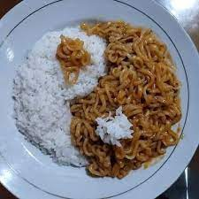

!pip install -Uqq fastai
Today I’ll be attempting to build my first deep learning image classifier to distinguish between rice and noodles using knowledge gained from Jeremy Howards Fast AI course
High-level steps:
1. Search and Prepare Data
2. Create DataLoader
3. Create Learner
4. Prediction
I will detail any problems, issues, questions and resolutions during the process.
from fastbook import * c:\Users\tonyp\miniconda3\envs\fastai\Lib\site-packages\torchvision\io\image.py:13: UserWarning: Failed to load image Python extension: '[WinError 127] The specified procedure could not be found'If you don't plan on using image functionality from `torchvision.io`, you can ignore this warning. Otherwise, there might be something wrong with your environment. Did you have `libjpeg` or `libpng` installed before building `torchvision` from source?
warn(1. Search and Prepare Data
# 1.1 Get 'rice' photos
download_url(search_images_ddg('rice',max_images=1)[0],'rice.jpg',show_progress=False)
Image.open('rice.jpg').to_thumb(256,256)# 1.2 Get 'noodles' photos
download_url(search_images_ddg('noodles', max_images=1)[0],'noodles.jpg',show_progress=False)
Image.open('noodles.jpg').to_thumb(256,256)Lets use 60 imagess of ‘rice’ and ‘noodles’ from DuckDuckGo.
Note: I downloaded for 100 images of each and then taking 60 of them as some images fail so I’m leaving room for failed photos.
Question: Why do we need verify and why do some photos fail?
# 1.3 Prep images in folders
searches = ['rice', 'noodles']
path = Path('rice_or_noodles')
if not path.exists(): # Ensure the path exists
for o in searches:
dest = (path/o)
dest.mkdir(parents=True, exist_ok=True)
print(f'Searching for {o} images...')
results = search_images_ddg(f'{o} photo',max_images=100)
print(f'{len(results)} images found for {o}. Downloading...')
download_images(dest, urls=results[:60])
print(f'Resizing images in {dest}')
resize_images(dest, max_size=400, dest=dest)# 1.4 Remove Failed images
path = Path('rice_or_noodles')
failed = verify_images(get_image_files(path))
failed.map(Path.unlink)(#0) []2. Create DataLoader
# 2.1
dls = DataBlock(
blocks = (ImageBlock, CategoryBlock), # i.e.input image / ouput is category (coin or notes)
get_items = get_image_files, # returns list of images files
splitter = RandomSplitter(valid_pct=0.2, seed=42), # critical to test accuracy with validation set
get_y=parent_label, # use parents folder of a path
item_tfms=[Resize(192, method="squish")] # most computer vision architecutres need all your inputs to be same size
).dataloaders(path) c:\Users\tonyp\miniconda3\envs\fastai\Lib\site-packages\fastai\torch_core.py:263: UserWarning: 'has_mps' is deprecated, please use 'torch.backends.mps.is_built()'
return getattr(torch, 'has_mps', False)# 2.2 We can see Paths were created for every image and split into our training and data sets
dls.train_ds.items[:2]
dls.valid_ds.items[:2][Path('rice_or_noodles/rice/4280fe58-691a-4c0b-85a5-5c1c8400ecb7.jpg'),
Path('rice_or_noodles/rice/f8a77d77-c007-4854-af8b-2af624a8da66.jpg')][Question]: How does it know whether it is training set or valid set? I guess theres some indexing somewhere that I dont know how to obtain.
# 2.1 Show a training batch which has an 'image' and a 'label'
dls.show_batch(max_n=6) #batch shows input and label2. Create Learner using ResNet
In the course, we used a pre-trained model ‘ResNet18’ (RN).
Why Pre-trained Models?:
- Pre-trained models is like getting an athlete who is very good basic sport related skills like hand-eye coordination, jumping, running/sprinting, changing directions etc and then - telling them to learn a specific sport (fine-tuning), - say tennis (labelled dataset provided). With a good base of skills, this person should be able to learn tennis to a good level…
ResNet18:
- ResNet18 is trained on 1.28 million images with 1000 object categories. - 18 layers
- Trained on ImageNet dataset
[Future iterations 1]: Perhaps there are alternative pre-trained models specialising in food?
[Future iterations 2]: - Read up and try understand the various architectures Fast AI’s TIMM model architectures - Try different architectures and different versions
learner_RN18 = vision_learner(dls, resnet18, metrics=error_rate)2.1 Learner Model Times:
They all took under 10 seconds to create the general learner. Now to fine-tune them!
learner_RN18.fine_tune(8)| epoch | train_loss | valid_loss | error_rate | time |
|---|---|---|---|---|
| 0 | 1.840357 | 4.676042 | 0.476190 | 00:03 |
| epoch | train_loss | valid_loss | error_rate | time |
|---|---|---|---|---|
| 0 | 1.763106 | 3.761843 | 0.476190 | 00:04 |
| 1 | 1.517361 | 2.798523 | 0.476190 | 00:04 |
| 2 | 1.202234 | 2.308116 | 0.428571 | 00:04 |
| 3 | 0.953227 | 1.637496 | 0.428571 | 00:04 |
| 4 | 0.770979 | 1.034023 | 0.380952 | 00:04 |
| 5 | 0.662257 | 0.641428 | 0.190476 | 00:04 |
| 6 | 0.563239 | 0.405057 | 0.142857 | 00:04 |
| 7 | 0.490904 | 0.285846 | 0.095238 | 00:04 |
Our learner is performing at 90% accuracy (9% error rate) by looking at only 60 photos!
Lets try predict some random photos of rice and noodles I’ve found on the internet.
from IPython.display import Image # import image viewer# noodle predictor
uploader = SimpleNamespace(data = ['test_noodle.jpg'])
image_path = uploader.data[0]
display(Image(filename=image_path))
res1, res2, res3 = learner_RN18.predict(image_path)
print(f"{res1}: {res3[res2]*100:.2f}%")c:\Users\tonyp\miniconda3\envs\fastai\Lib\site-packages\fastai\torch_core.py:263: UserWarning: 'has_mps' is deprecated, please use 'torch.backends.mps.is_built()'
return getattr(torch, 'has_mps', False)noodles: 99.98%Prediction 1: Noodles
The model predicted noodles correctly with 99.98% confidence!
# rice predictor 1
uploader = SimpleNamespace(data = ['test_rice.jpg'])
image_path = uploader.data[0]
display(Image(filename=image_path))
res1, res2, res3 = learner_RN18.predict(image_path)
print(f"{res1}: {res3[res2]*100:.2f}%")noodles: 66.22%Prediction and Results 2: Rice 1
The model predicted rice incorrectly with 66.22% confidence!
I was a bit confused so I decided to provide another image of rice to make
# rice predictor 2
uploader = SimpleNamespace(data = ['test_rice2.jpg'])
image_path = uploader.data[0]
display(Image(filename=image_path)) # show image
# get
res1, res2, res3 = learner_RN18.predict(image_path)
print(f"{res1}: {res3[res2]*100:.2f}%")
noodles: 98.51%Prediction and Results 3: Rice 2
The model predicted rice incorrectly with 98.51% confidence!
Okay now there is clearly something wrong going on. I decide to take a gander at the photos in my ‘rice’ folder.
It looks like we’ve trained a learner specialises in bowled or white rice. I was testing the model with fried rice since that is my favourite rice dish.
Lets test out a couple photos on bowled rice.
# rice predictor 2
uploader1 = SimpleNamespace(data = ['test_boiledrice1.jpg'])
uploader2 = SimpleNamespace(data = ['test_boiledrice2.jpg'])
image_path1 = uploader1.data[0]
image_path2 = uploader2.data[0]
display(Image(filename=image_path1)) # show image
display(Image(filename=image_path2)) # show image
res1, res2, res3 = learner_RN18.predict(image_path1)
print(f"{res1}: {res3[res2]*100:.2f}%")
res1, res2, res3 = learner_RN18.predict(image_path2)
print(f"{res1}: {res3[res2]*100:.2f}%")
rice: 88.73%noodles: 92.57%Now I’m confused as its predicting incorrectly with 92.57% confidence.
Perhaps the model isnt seeing enough data?
Lets train a new model with:
- 300 images instead of 60
- ‘rice food’ and ‘noodle food’ as keyword insteads of just ‘rice’ and ‘noodles’
searches = ['rice food', 'noodles food']
path_200 = Path('rice_or_noodles_300')
if not path_200.exists(): # Ensure the path exists
for o in searches:
dest = (path_200/o)
dest.mkdir(parents=True, exist_ok=True)
print(f'Searching for {o} images...')
results = search_images_ddg(f'{o} photo',max_images=300)
print(f'{len(results)} images found for {o}. Downloading...')
download_images(dest, urls=results[:200])
print(f'Resizing images in {dest}')
resize_images(dest, max_size=400, dest=dest)
# 1.4 Remove Failed images
path_200 = Path('rice_or_noodles_300')
failed = verify_images(get_image_files(path_200))
failed.map(Path.unlink)
(#10) [None,None,None,None,None,None,None,None,None,None]
dls_200 = DataBlock(
blocks = (ImageBlock, CategoryBlock), # i.e.input image / ouput is category (coin or notes)
get_items = get_image_files, # returns list of images files
splitter = RandomSplitter(valid_pct=0.2, seed=42), # critical to test accuracy with validation set
get_y=parent_label, # use parents folder of a path
item_tfms=[Resize(192, method="squish")] # most computer vision architecutres need all your inputs to be same size
).dataloaders(path_200) learner_RN18_200 = vision_learner(dls_200, resnet18, metrics=error_rate)learner_RN18_200.fine_tune(4)| epoch | train_loss | valid_loss | error_rate | time |
|---|---|---|---|---|
| 0 | 1.155098 | 0.872050 | 0.338462 | 00:11 |
| epoch | train_loss | valid_loss | error_rate | time |
|---|---|---|---|---|
| 0 | 0.625260 | 0.402908 | 0.169231 | 00:15 |
| 1 | 0.442973 | 0.289800 | 0.138462 | 00:14 |
| 2 | 0.317375 | 0.328805 | 0.153846 | 00:14 |
| 3 | 0.235606 | 0.327507 | 0.123077 | 00:15 |
# Prediction with new learner (300 images and specific keywords)
# rice predictor 2
uploader1 = SimpleNamespace(data = ['test_boiledrice1.jpg'])
uploader2 = SimpleNamespace(data = ['test_boiledrice2.jpg'])
image_path1 = uploader1.data[0]
image_path2 = uploader2.data[0]
display(Image(filename=image_path1)) # show image
display(Image(filename=image_path2)) # show image
res1, res2, res3 = learner_RN18_200.predict(image_path1)
print(f"{res1}: {res3[res2]*100:.2f}%")
res1, res2, res3 = learner_RN18_200.predict(image_path2)
print(f"{res1}: {res3[res2]*100:.2f}%")

rice food: 100.00%rice food: 99.95%So it’s now 100 and 99.95% confident they’re rice, which is great!
Lets try some fried rice!
We’ll retest now at the fried rice photo which the initial model guessed to be noodles with 98.5% confidence
# Prediction with new learner (300 images and specific keywords)
# rice predictor 2
uploader1 = SimpleNamespace(data = ['test_rice2.jpg'])
image_path1 = uploader1.data[0]
display(Image(filename=image_path1))
res1, res2, res3 = learner_RN18_200.predict(image_path1)
print(f"{res1}: {res3[res2]*100:.2f}%")rice food: 99.56%Great! It is correct with 99.56% confidence.
I think we’ve created a great rice and noodles classifier, lets stop here.
[Future Iteration 3]: Build web app for everyone to test it out
[Future Iteration 4]: Make it useable on my blog
[Question] I wonder if theres a way to quickly see all specific headings I’ve used, I find myself scrolling up and download to find what Iteration I’m up to…
Apologies for the lack of neatness, lets hope this improves over time…